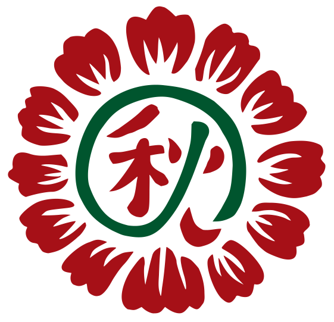
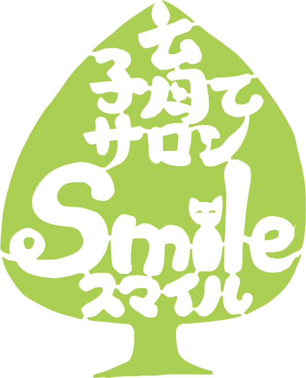
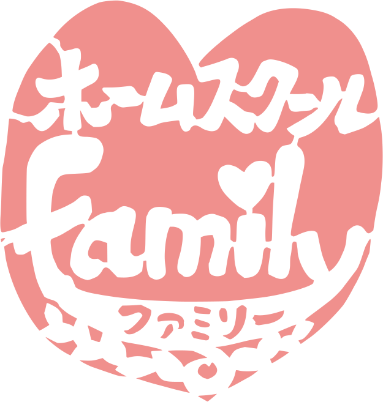

秋の農園
秋の農園では、35年以上農薬・化学肥料を使用していない土地で、自然栽培という農法で野菜を育てています。
いいこといろいろねこさろん
9歳のオーナーとベテラン猫写真家の出会いから生まれた楽しいさろん！猫幸神様（ねこうかみさま）についてはこちら

子育てサロン smile
「自然共生子育て法」で子どもが本来持っている力を最大限に伸ばしてみませんか？おむつなし育児などの育児相談も受付中！子育て全般をサポートします。

ホームスクール family
自由な環境の中で、やりたいことを自分で選択できる意志を育てます。希望すれば畑仕事や猫のお世話など、自然との触れ合いもできます。